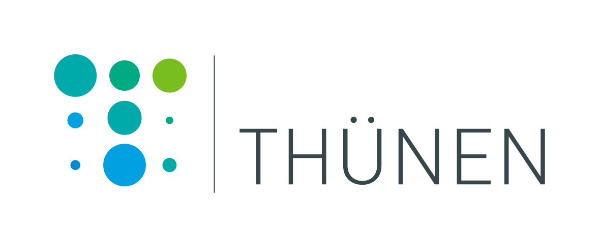
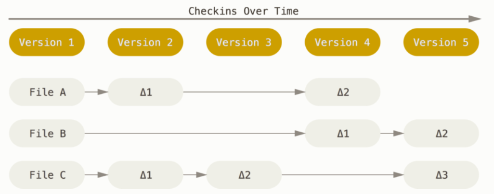
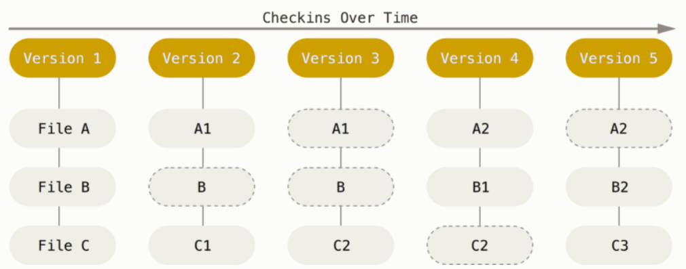
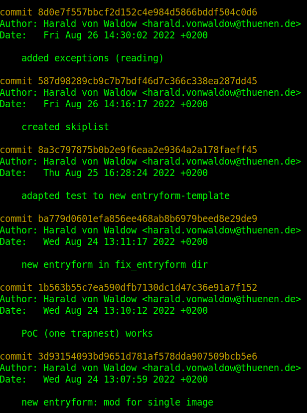
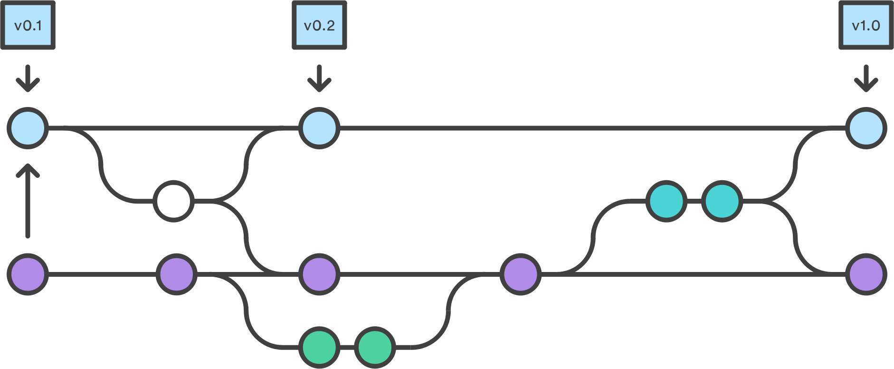
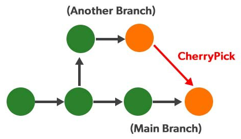
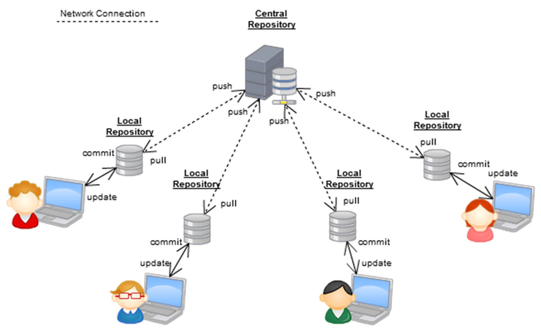
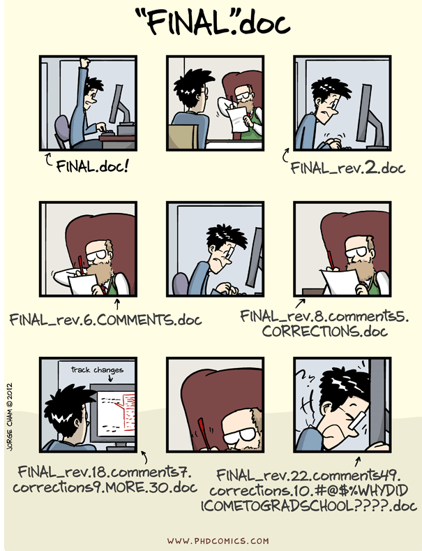
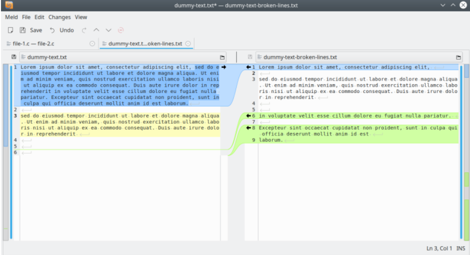
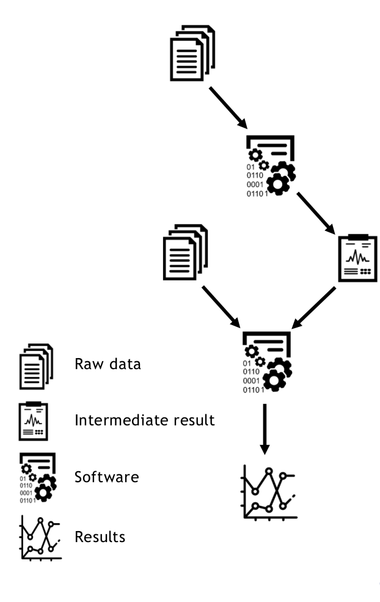

Git as a general tool for data-management
What is Git?
- A program for version-control in software-development
- Developed in 2005 to manage Linux kernel development (~5e6 LOC at the time)
- A distributed, decentralized database
- Every copy of the database has the full information
- A content-addressable file-system
- Everything is stored by an SHA1-hash.
- Commits, trees and blobs form a Merkle Tree
Version control



- Snapshots whole folders recursively
- Provides a history
- Attached metadata: who, what, when
Version control


- Anti-data-loss design
- Allows for massive non-linear development in branches
- Easily see differences between files, branches, commits
- Track development through different branches
- Sophisticated mechanisms to pick & choose individual changes and sequences of changes
Distributed & decentralized

- Multiple complete copies of everything
- Work offline, e.g. no interruptions with shaky VPN or while travelling
- No "owner" of a central repository
→ forks are a non-issue
Content-addressable
- Diffing across a large number of files & directories is fast.
- Changes in everything (files, tree, commits) is detected reliably and automatically.
- Identical blobs are only stored once
What does it do to you?
- Data safety
- Peace of mind, fosters creativity
- Provides a practical beat for your work (commit-messages)
- Ease of sharing (
clone, push, pull)
What is not Git
GitHub.com, GitLab.com
- Commercial SaaS offers
- Web-interface for Git plus
- Project management (Milestones, Kanban Boards, ...
- Collaboration features (Issues, Discussion, Merge Requests, ...) → Florian's presentation
- DevOps features (Cont. Integration, Cont. Delivery, ..) → Winnie's presentation
What is not Git
GitLab Community Edition, Gitea
- Open Source products, on-premise installation
- GitLab is extremely widespread. Thünen Institute is running 2 instances (
git-intandgit-dmz) - GitLab is becoming the de-factro standard platform for agile software development.
- GiTea has less features, is much more lightweight uses less ressources and is easier to configure and run.
Git for other tasks



- Can be used by any knowledge-worker who produces digital output
- E.g. to write articles, books, contracts
- E.g. as a backbone of sophisticated RDM-system (
Renku) - E.g. to power a distributed password-manager (
pass)